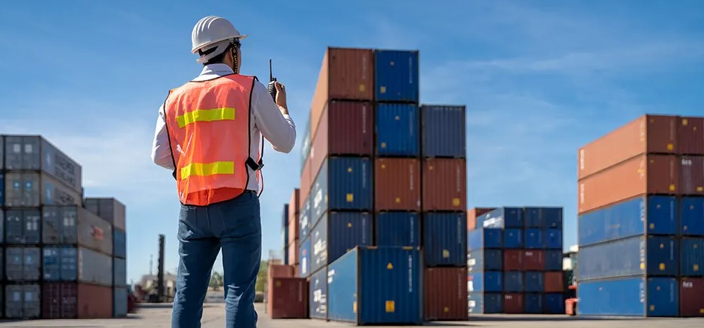
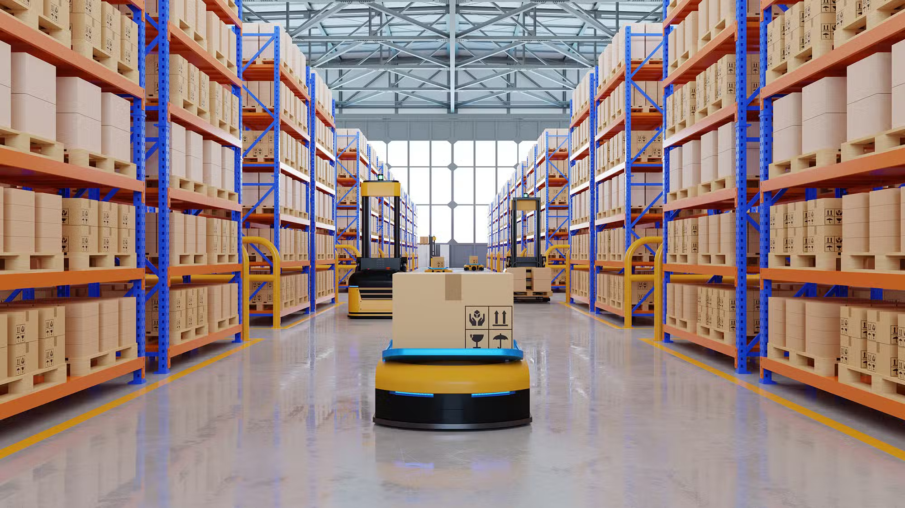

What We Do / Integrated Logistics
One Supply Chain.
Connected Expertise.
Cold-chain strength at the centre. Freight, transport, warehousing and specialist services around it.

01Our Core Strength
Cold-Chain Solutions
Temperature-controlled transport and storage for perishable goods.
Cold-Chain Movement
Our cold-chain transport services support food, beverages, fruit, vegetables and other perishable goods. Refrigerated containers provide controlled conditions during movement, with 20 ft, 40 ft and 40 ft high-cube options for different shipment volumes. The required temperature and container specification are confirmed according to the product and its handling requirements.
Insulation helps minimise heat transfer during transportation, making refrigerated containers suitable for domestic trucking in tropical and hot conditions. By coordinating the container, loading arrangements and delivery requirements, we help protect temperature-sensitive cargo throughout its journey.
Cold Storage
Our cold storage service supports the preservation of perishable cargo by maintaining conditions suited to the product. Temperature requirements, available space and handling arrangements are considered together to help protect the quality of goods throughout storage.
Cold-room warehousing supports applications across food processing, meat, poultry, fish and seafood. Cold-room refrigeration systems include screw compressors, reciprocating compressors and liquid chillers for different applications. The product range includes items such as apples, apricots, bananas, beans, butter, cabbage, cauliflower and oranges. Our cold storage support includes:
- Allocation and management of cold-storage space
- Temperature-control arrangements suited to perishable products
 02
02Freight Forwarding & Customs
3PL & Integrated Logistics
Air and sea imports and exports, supported by documentation, customs clearance and cargo insurance coordination.
Air Import
Our air import services include consolidation, deconsolidation and back-to-back arrangements according to shipment requirements. An established network of agents supports the coordination of inbound cargo, helping us plan transit times, capacity and cost. Handling arrangements are tailored to the goods, including fragile and sensitive consignments.
Integrated air and ground coordination connects collection with delivery. Documentation, customs declarations, local transport and onward delivery are planned together, with options for transshipment, break-bulk cargo and specialist handling. Our air import services include:
- Shipment documentation
- Customs and airport customs declarations
- Local forwarding and transportation
- Door-to-door delivery
- Sea-air and air-sea transshipment
- Break-bulk air import
- Cargo-space planning
- Freight-rate arrangements
- Transit-time coordination
- Coordination with airlines
- Consolidation services
- Specialist arrangements for high-value, fragile, oversized and hazardous goods
Air Export
We coordinate air exports from Singapore and Malaysia through an international network of agents and associates. Each shipment is planned around the customer’s requirements, whether it needs a direct flight, reserved cargo capacity, a consolidated departure or specialist project arrangements. Collection, transshipment, documentation and delivery are considered together to support a coordinated export journey. Our air export services include:
- Domestic collection
- Multimodal transportation during transshipment
- Consolidation and deconsolidation
- Door-to-door delivery
- Shipment documentation
- Customs declarations
- Freight-rate arrangements
- Transit-time coordination
- Coordination with airlines
Sea Import
Our sea import services support customers in Singapore and Malaysia through an established shipping network. Trained personnel coordinate the movement of cargo from origin to destination, with attention to shipment requirements, cargo safety and the customer’s delivery arrangements. The import process can connect collection, transport to port, ocean freight, customs documentation and final delivery. Our sea import services include:
- Collection from the origin address
- Multimodal transport to the port of discharge
- Sea transportation to the destination
- Door delivery to the customer
- LCL and FCL multi-country consolidation
- Preparation and clearance of sea import documents
- Sea import customs declarations
- Break-bulk services
Sea Export
We coordinate sea exports from Singapore and Malaysia to international destinations. Our service options cover different cargo volumes, transit requirements and delivery arrangements, with defined processes connecting consolidation, customs administration and onward movement. Carrier-space arrangements and documentation are planned around each consignment to support a reliable export process. Our sea export services include:
- LCL and FCL shipments to international destinations
- Consolidation and deconsolidation at major ports
- Port-to-port and door-to-door services
- Customs administration for different product types
- Cargo-space arrangements with ocean carriers
- Customs declarations and clearance coordination
Customs Declaration
We support import and export customs clearance by helping customers prepare the required shipment documents. Import documentation may include the original invoice, packing list, bill of lading or air waybill, importer or bank endorsements, insurance certificate, purchase order or letter of credit, and the applicable import licence. Product catalogues or technical literature may also be required, particularly for chemical goods.
Export clearance may require an export licence or permit, sales contract, invoice, packing list and shipping instructions, together with other documents relevant to the consignment. Once the documentation is prepared, we assist with declarations and the associated formalities. Our support includes:
- Pre- and post-shipment guidance
- Liaison and follow-up with relevant government organisations
- Preparation and handling of shipment documents
- Post-shipment formalities and endorsements
Cargo Insurance
We help coordinate cargo insurance arrangements for the journey from the port of discharge to the destination. Cover may address risks such as natural events, fire, theft and pilferage, according to the terms of the insurance policy. When shortages, damage or loss are identified in the port area, we can arrange a survey and assist with the insurance claim and applicable duty-remission procedures.
Where damage or pilferage is identified after customs clearance, during onward transit from the port to the final destination, we can coordinate a survey at the unloading point and assist the customer with seeking compensation from the insurer.
Survey and claims formalities are coordinated alongside the shipment process to help avoid unnecessary disruption to clearance or the use of goods after delivery. The appropriate steps depend on the circumstances of the loss, the shipment records and the policy requirements.
 03
03Land Transit
Transportation & Distribution
Container trucking and dry cargo movement, coordinated around your cargo and destination.
Container Trucking
Our container trucking service supports the storage and transportation of a wide range of cargo. We plan each movement around the customer’s requirements, with dry, high-cube, open-top, flat-rack, tank and refrigerated container options available for different types of goods.
We handle container sizes including 10 ft, 20 ft, 24 ft and 40 ft, with closed and open-top configurations. Our fleet of containers and containerised vehicles supports door-to-door movements. Before loading, containers are checked for humidity, leaks and floor condition to help ensure they are suitable for the cargo and ready for transport.
Dry Cargo Movement
Our dry cargo transport services support conventional goods in containers built to international standards. Available 20 ft and 40 ft options accommodate different cargo volumes, while high-cube configurations provide additional space where required. The container type is selected according to the weight, dimensions and handling needs of the shipment.
Standard dry containers range from approximately 6 metres to 12 metres in length and are designed to provide weatherproof, secure transport. They can support light and heavy cargo, including bulk commodities such as coal, grains, steel and fertilisers, with loading and movement planned around the consignment.

04Storage & Inventory
Warehousing
Storage, stock tracing, temperature control and dry cargo management.
Storage & Distribution
Our warehousing and distribution operations focus on improving service, managing costs and strengthening operational performance. Planning and continual improvement help align storage, handling and distribution with the customer’s wider supply chain.
Warehouse storage supports cargo in transit and distribution to local depots and sales points. Our facilities accommodate a broad range of goods, from heavy machinery and small spare parts to perishable fruit and vegetables. Storage arrangements, technology and local operational knowledge help customers organise inventory and coordinate onward movement, while keeping product quality and service requirements in view.
Warehouse Location & Layout
Warehouses are located near industrial areas and within reach of air or sea ports to support the transfer of goods between production, storage and transport. Layouts are arranged to allow trucks and containers to enter, move through and leave the premises efficiently. This helps connect receiving, loading and dispatch activities without unnecessary handling or congestion.
Storage Space & Tracking
Cargo is allocated storage space according to its requirements, from larger machinery to small components such as screws and nuts. Labelling, barcoding and computerised warehouse management support stock identification and tracing, helping teams locate goods and coordinate their movement through the warehouse.
Cold Storage
Our cold storage service supports the preservation of perishable cargo by maintaining conditions suited to the product. Temperature requirements, available space and handling arrangements are considered together to help protect the quality of goods throughout storage.
Cold-room warehousing supports applications across food processing, meat, poultry, fish and seafood. Cold-room refrigeration systems include screw compressors, reciprocating compressors and liquid chillers for different applications. The product range includes items such as apples, apricots, bananas, beans, butter, cabbage, cauliflower and oranges. Our cold storage support includes:
- Allocation and management of cold-storage space
- Temperature-control arrangements suited to perishable products
Dry Cargo Management
Owned and leased warehouse space, storage systems and material-handling equipment give customers an alternative to investing in their own facilities. In-warehouse organisation and inventory management help streamline order processing, reduce shipping errors and improve stock tracing.
Dry cargo management brings together records of incoming and outgoing goods with the related logistics activity. Inventory information supports timely stock-status updates and the planning of storage and dispatch. Our dry cargo management practices include:
- Storage in racks and containers
- BIN card records
- Appropriate labelling and barcoding
- Stock-availability monitoring
- RFID analysis to help position frequently moving cargo for access
Specialist Services & Relocation
Supply Chain Solutions
Packing and moving, livestock handling, port operations, consultancy and quality inspection.
Packers and Movers
Our packing and moving services are planned around the individual customer and the goods being relocated. Each item is assessed according to its fragility, importance and handling requirements, then packed with materials suited to the move. Protective packing helps safeguard belongings from the surrounding environment and makes handling and relocation easier.
Items are packed and marked separately so they can be identified and unpacked at the destination. Clear marking helps the receiving team organise the goods and put them in the appropriate place during resettlement.
Loading and transport arrangements are selected according to the consignment, destination and handling needs. We coordinate the stages of the move so goods can be transferred in suitable carriers. Contact our team to discuss the inventory and request an estimate for:
- Corporate moves
- Office moves
- Residential moves
- Hospital equipment moves
- Furniture moves
- Musical instrument moves
- International moves
- Packing services
Livestock Handling
Our livestock handling experience includes poultry, cattle and other animals, with particular attention to the planning and care required for specialist cargo. Our project experience includes the Korban Ibadat project, awarded in 2005. Operations teams consider the consignment and its handling requirements before coordinating loading and transport, with the aim of supporting a safe, balanced and comfortable journey for the livestock.
Port Handling
Our port handling services support the loading and discharge of bulk cargo, containers, project cargo and dangerous goods. Handling is planned around each consignment, including dry and liquid cargo, oversized loads and goods with specialist requirements, with care throughout loading, unloading and delivery.
Support also includes handling-agent services at other port berths and container stuffing and de-stuffing outside the dock premises. Vessel coordination, documentation, customs formalities and storage arrangements help connect the stages of port activity. Our port handling services include:
- Vessel coordination with port authorities, immigration and customs
- Formalities and paperwork for inbound and outbound vessels
- Customs handling and clearance
- Yard and warehouse arrangements
Logistics Consultancy
Our logistics consultancy starts with an objective diagnostic review to identify practical development opportunities. The assessment considers current operations and future requirements, drawing on specialist knowledge and experience across different industries.
Consultancy can examine the configuration of logistics networks and the choice of transport modes to help streamline supply-chain performance. Recommendations are shaped around the customer’s operating requirements, with the aim of finding an appropriate and practical solution. Consultancy areas include:
- Inbound supply-chain network optimisation
- Outbound supply-chain network optimisation
- Warehouse rationalisation and inventory reduction
- Transport-mode optimisation
- Transport-vehicle optimisation
- 3PL and 4PL network outsourcing
- Total logistics and supply-chain management
Quality Inspection
We coordinate cargo quality inspections through SGS on behalf of customers at different stages of freight forwarding. The approach focuses on assessing goods against agreed requirements, with inspections selected according to the shipment and the risks involved.
Inspection, analysis and testing can take place during critical transport, custody-transfer and storage activities. These checks help protect the quantity and quality of commodities and identify potential loss or damage while goods move through the supply chain.
Quality assurance can assess whether machinery, components and materials meet stated standards and intended service requirements. Quality control may involve measurement, testing or supervision of the exporter’s final product checks, using individual-unit inspection or sampling as appropriate. Inspection considerations include:
- Reliability
- Maintainability
- Applicable SGS standards
- Defined cargo-inspection parameters
- Checks at different cargo-handling stages to help reduce loss and damage